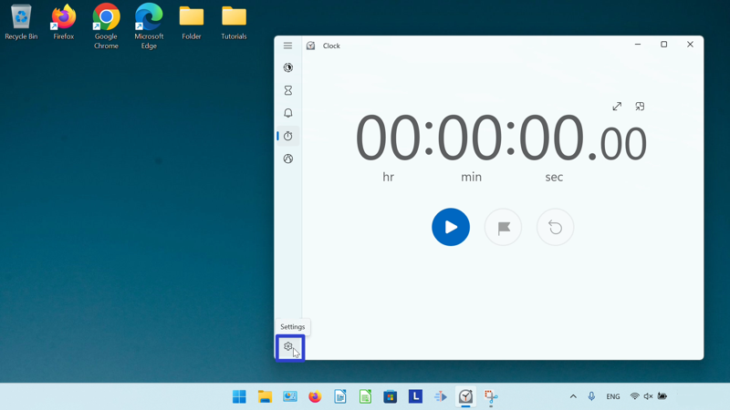
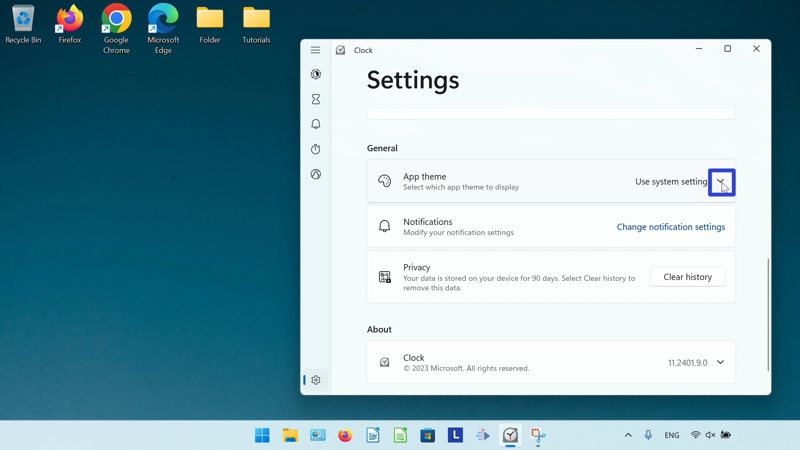
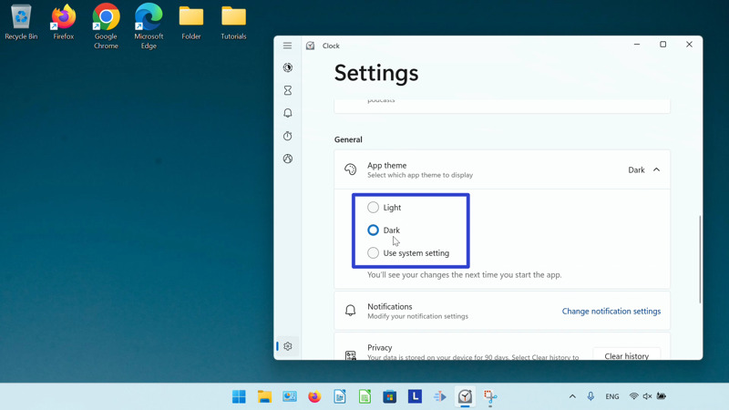
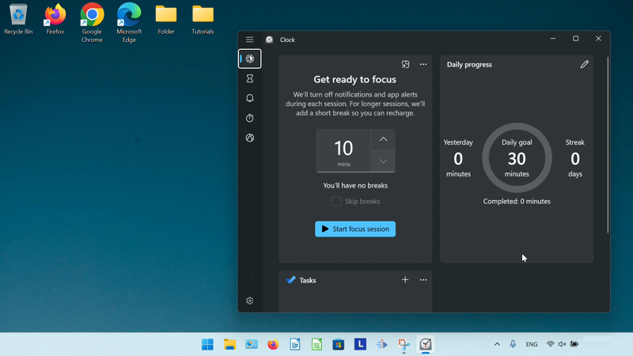
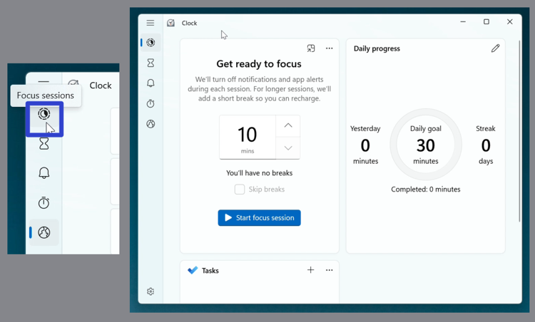
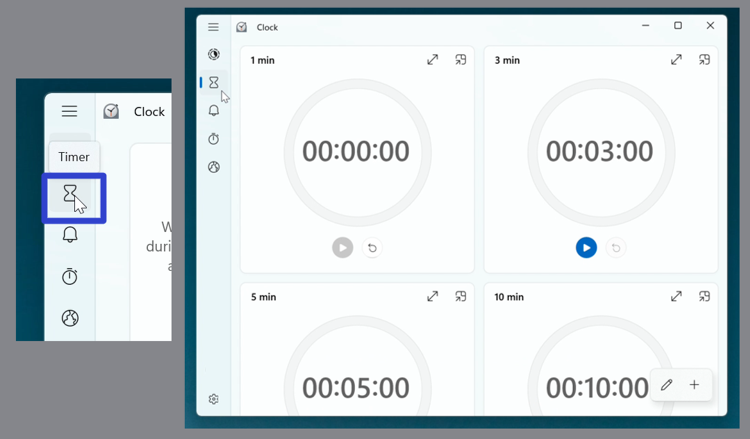
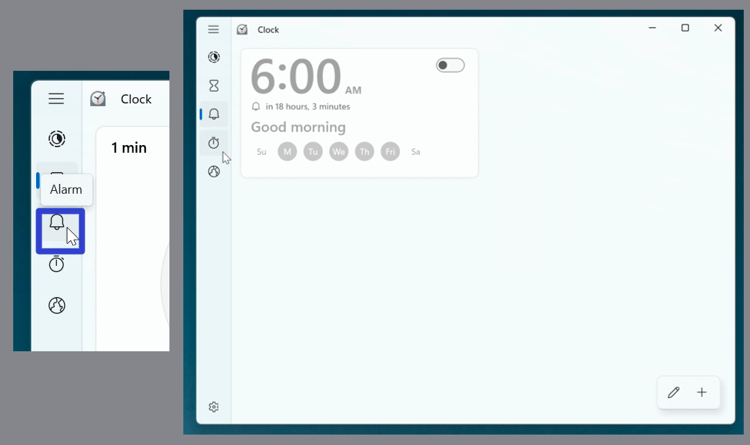
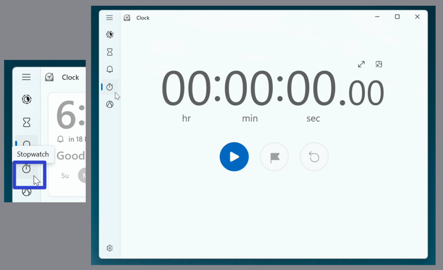
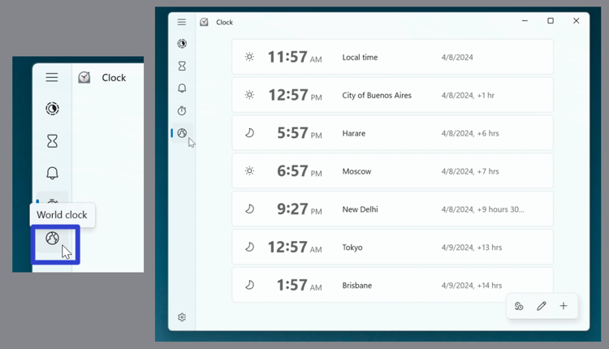

How to Edit the Microsoft Windows Clock Settings (Windows 11)
This tutorial covers:
How to Change the Windows Clock Theme Color
How to Switch Between Clock Modes:
How to Keep Windows Clock on Top
How to Return Windows Clock Back to Full View
How to Expand a Windows Clock Mode
How to Restore a Windows Clock Mode
How to Customize Notification Settings
No time to scroll down? Click through this presentation tutorial:
Watch a tutorial video:
How to Change the Windows Clock Theme Color
- Step 1: First open Windows Clock. In the lower left click the “Settings” or gear button. 
- Step 2: In the Settings window that opens, scroll down to the “General” section. On the far right side of the “App theme” section, click the drop-down menu arrow. 
- Step 3: In the menu that opens, click to select “Light”, “Dark”, or “Use system setting”. 
- Step 4: Close and reopen the Windows Clock app to view the new color theme. 
How to Switch Between Clock Modes With Click
Step 1: Open Windows Clock. Go to the left menu, and click one of the buttons to switch to the corresponding clock mode:
- Click the “Focus sessions” button to switch to the Focus sessions mode. 
- Click the “Timer” button to switch to the Timer mode. 
- Click the “Alarm” button to switch to the Alarm mode. 
- Click the “Stopwatch” button to switch to the Stopwatch mode. 
- Click the “World clock” button to switch to the “World clock” mode. 
How to Move the Microsoft Windows Clock With Right Click
- Step 1: First open Windows Clock. Right click the top of the window.

- Step 2: In the menu that opens, click “Move”.

- Step 3: Click, hold, and drag the four arrows cursor at the top of the window to move it. Release the mouse to stop moving the window.

Refer to these instructions for later with this free tutorial PDF.